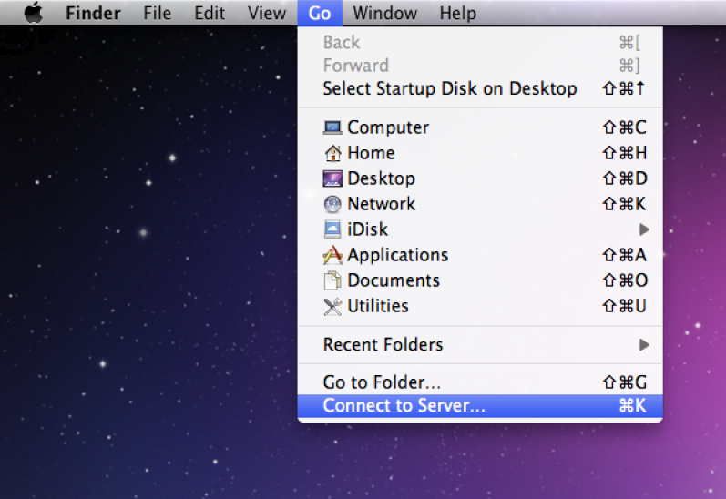
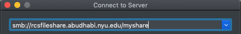
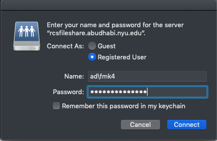
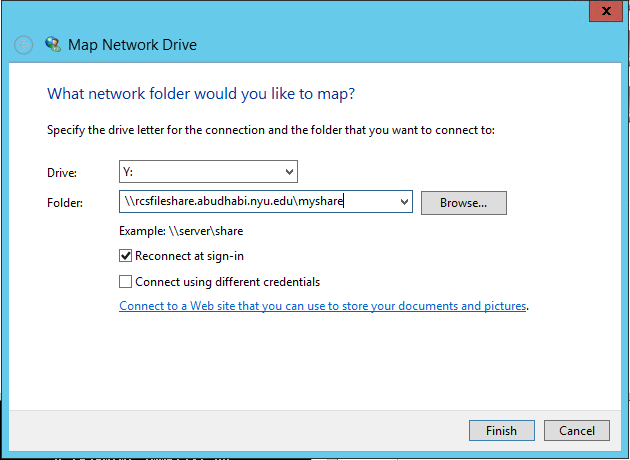
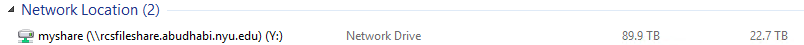

How to Map Shared Drive¶
MAC¶
In Finder, select
Connect to Serverfrom Go menu- Type the following Windows File Share Address followed by the folder name:
smb://rcsfileshare.abudhabi.nyu.edu/
<SHARE_FOLDER_NAME>
In the below shown screen, type your NetID and password:
Important
Name format should be NetID prefixed with
ad\. Example forfmk4, Name should bead\fmk4.
Windows¶
Open My Computer window -> Select
Map Network Drive
Select Drive Letter; for example
Y:DriveCopy paste the link received by IT ( for example :
\\rcsfileshare.abudhabi.nyu.edu\myshare)Select
Reconnect at LogonClick Finish

The departmental drive will appear in My Computer window below Network Location Pane as shown below:

Ubuntu¶
$ sudo apt-get install cifs-utils
$ sudo mkdir /mnt/network
$ sudo mount -t cifs //rcsfileshare.abudhabi.nyu.edu/<share_name> /mnt/network -o username=<netid>,sec=ntlmssp,vers=2.0
Centos¶
$ sudo yum install cifs-utils
$ sudo mkdir /mnt/network
$ sudo mount -t cifs //rcsfileshare.abudhabi.nyu.edu/<share_name> /mnt/network -o username=<netid>,sec=ntlmssp,vers=2.0